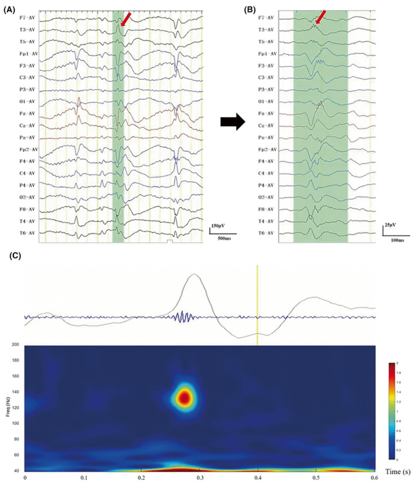

Achado / pegadinha · Pág. 16 de 20
Rolândica: boca, sono e “às vezes só acompanhar”
A armadilha: “epiléptico sempre trata com AED?” A rolândica é a síndrome que responde não necessariamente — poucas crises orofaciais noturnas, sem prejuízo, podem ficar só em acompanhar. O AED rebaixa o SNC; nem sempre o custo-benefício fecha.
A epilepsia autolimitada com espículas centro-temporais (epônimo rolândica / BECTS) é o contraponto da ausência: esta exige tratar pelo impacto escolar; aquela, muitas vezes, pede só higiene do sono — porque remite sozinha na adolescência.
Idade e foco orofacial
Incidência típica: 3–10 anos. Crises focais com consciência preservada, foco boca/face. Quadro rico: movimentos orais; disartria na crise; dormência em língua, lábios, gengiva e bochecha (motor + sensitivo).
Sono e poucas crises
Preferência noturna / sono irregular e privação como gatilhos. Em geral poucas crises na vida (1–2, não dezenas) — outro contraste com a ausência, que faz centenas por dia.
Tratar sempre? → não necessariamente
Rolândica
Poucas crises orofaciais noturnas sem prejuízo funcional: o custo-benefício do AED (rebaixa SNC) pode não justificar. Resposta de prova pode ser só acompanhar + higiene do sono.
Ausência
Ausência exige tratar — pelo impacto escolar (fragmentos de informação, notas que caem). Não dá para “só acompanhar”.
Às vezes só acompanhar
Pegadinha de prova: com poucas crises orofaciais noturnas sem prejuízo funcional, o custo-benefício do AED (rebaixa o SNC) pode não justificar o tratamento — a resposta de prova pode ser só acompanhar. Contraste com a ausência: a ausência exige tratar pelo impacto escolar.
EEG centro-temporal
Diagnóstico: EEG com espículas centro-temporais (o nome descreve a doença). Há remissão espontânea na adolescência — o que facilita a retirada de AED na infância, quando se optou por tratar.
Sono + LEV se tratar
Conduta base: higiene do sono; se há muitas crises, a escolha citada é o levetiracetam.

Resumo operacional
3–10 a · orofacial · noturna · poucas crises · às vezes só acompanhar · remissão na adolescência · LEV se tratar.
Por que importa
Receitar AED para toda epilepsia é o reflexo que a rolândica desmonta: às vezes o melhor tratamento é o sono regrado e a espera da adolescência.
Quiz
Conexão
No adolescente, outro pacote: mioclonia ao despertar — e um EEG mais rápido que o da ausência.